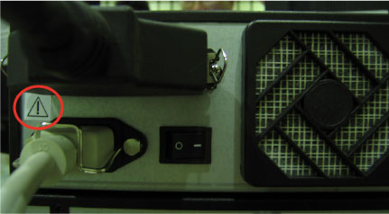

Operating Documentation
Direction 5181178-800, Rev# 16
Module Version 2.0, Version Date 8/28/09
Operating Documentation |
| ||||
| FOLLOW ALL REQUIRED SAFETY AND PPE PROCEDURES CUSTOMARY FOR YOUR ORGANIZATION WHEN WORKING ON THIS PRODUCT. | ||||
| Condition | Reference | Effectivity |
|---|---|---|
Access to the MOD Peripheral Tower is required. Make sure adequate space is available on console table top. | - | - |
Only trained service personnel should service the GE CT Scanner. | - | - |
Select one of the following methods to power off the Operator Console:
Power OFF the Operator Console at the front panel switch. (See Illustration 2.)
Illustration 2: Console Power Switch

Install the Option MOD Peripheral Tower chassis on the Operator Console.
Mount the power cord to the rear of the MOD Peripheral Tower chassis. Verify that the power switch on the MOD Peripheral Tower Power Supply is turned to the ON position.
Make sure the rear SCSI cable connections.
Power ON the Operator Console at the console front panel switch.
Visually verify the MOD Peripheral Tower front panel Power LED is illuminated.
Visually verify the Peripheral Tower front panel Power LED is illuminated and that each of the MOD Drive Access LEDs illuminates when media is inserted and the tray is closed.
No other verifications required.
The label Part Number is 5346627. It is shipped with TIO Console, not in the Option kit. So please find the label from the TIO Console package. Paste the label behind the MOD Tower, proper location refer to Illustration 5
Illustration 5: MOD Tower Label
